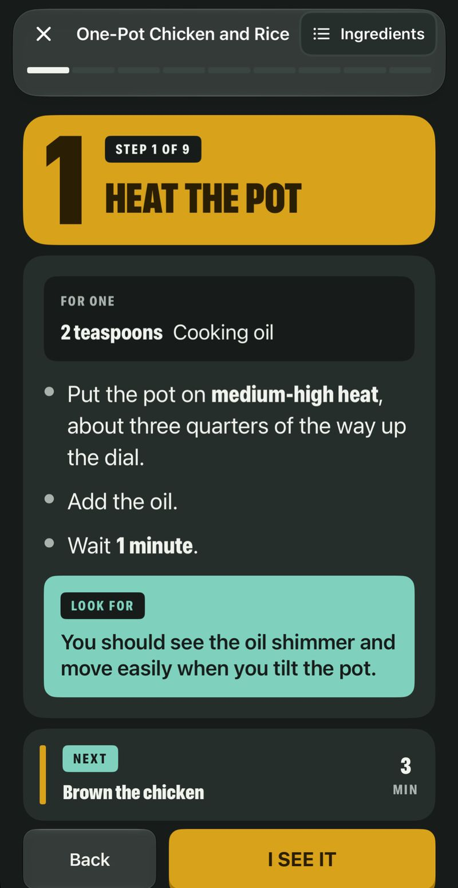
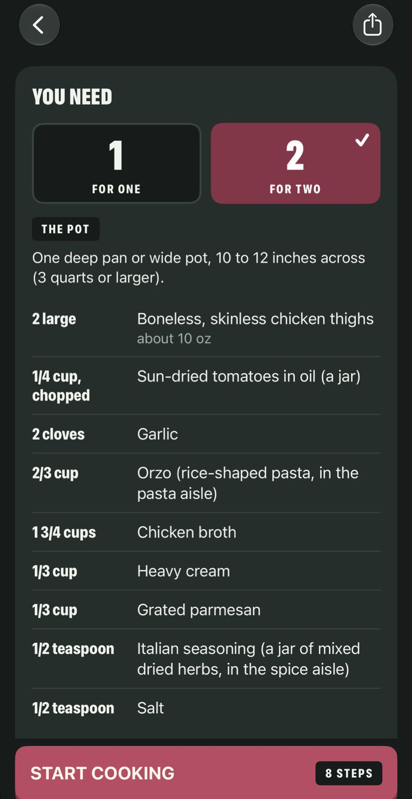
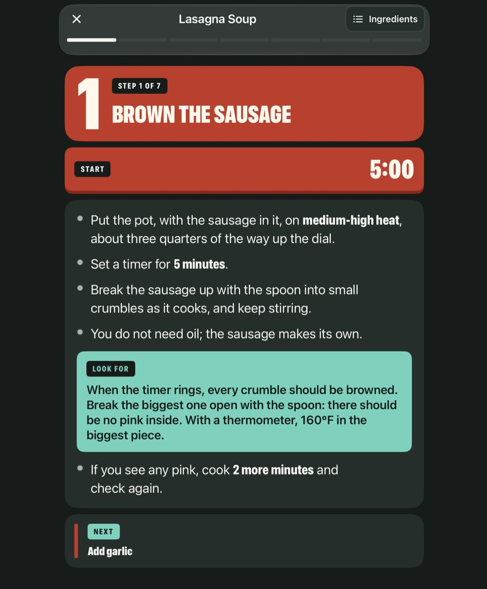
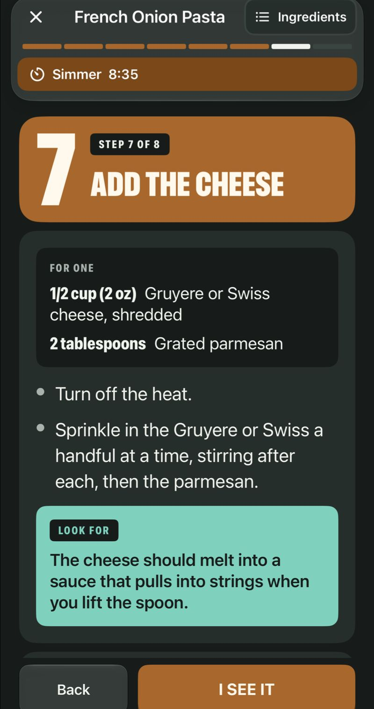
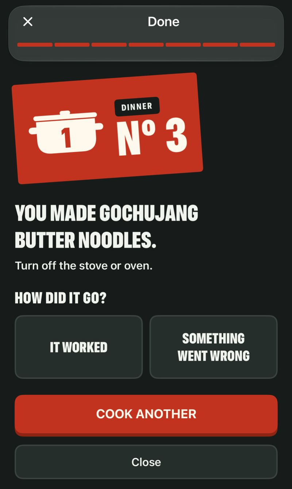
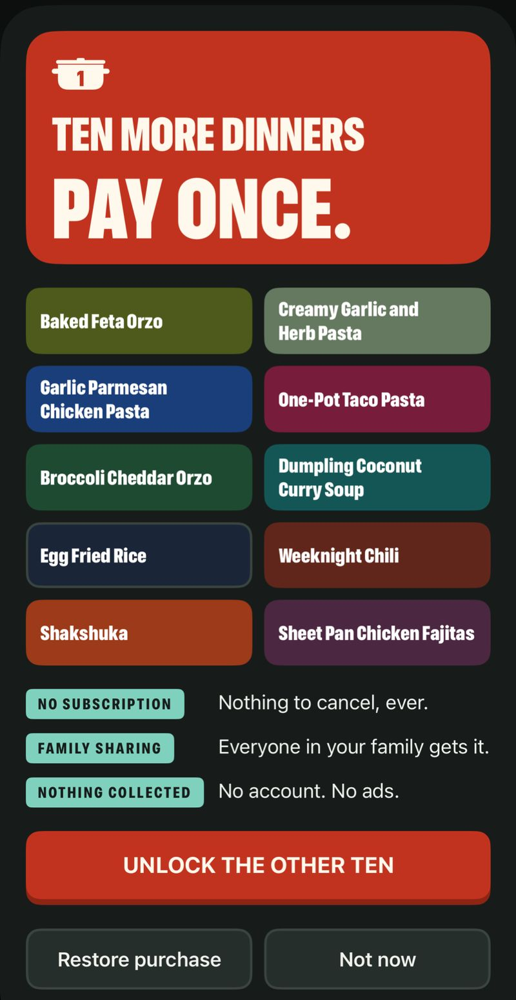

One-pot recipes for iPhone and iPad
Never cooked? Tonight you will.
Fifteen dinners, each made in one pot. Cook for yourself or for two, one step at a time.

Step 1 of 5
Pick a dinner
Every dinner starts and finishes in one pot or pan, and the recipe tells you what size up top. So there's one thing to wash.
Five recipes, free and complete
- Gochujang Butter Noodles 20 minutes
- One-Pot Chicken and Rice 45 minutes
- Lasagna Soup 30 minutes
- Marry Me Chicken Orzo 30 minutes
- French Onion Pasta 50 minutes
Ten more, one purchase
- Baked Feta Orzo
- Creamy Garlic and Herb Pasta
- Garlic Parmesan Chicken Pasta
- One-Pot Taco Pasta
- Broccoli Cheddar Orzo
- Dumpling Coconut Curry Soup
- Egg Fried Rice
- Weeknight Chili
- Shakshuka
- Sheet Pan Chicken Fajitas
Step 2 of 5
Say who's eating
Tap 1 or 2. Both sets of amounts are written out, so you're never halving a cup of broth in your head. Buy what's on the list, and each step shows the amounts it needs.

Step 3 of 5
Go one step at a time
- Each step tells you the heat, how long, and what it should look like before you move on.
- It doesn't assume you know anything. It tells you what size pot to use, what "medium-high" actually means, and how to tell when the chicken's done.

Step 4 of 5
Let the timer watch the pot
Timers keep running while you read ahead. Allow notifications, and they still go off when your phone is locked.

Step 5 of 5
You made dinner
Turn off the stove. Then one question: did it work?
If it didn't, every dish has an "if something goes wrong" section. Noodles still firm, soup too thick, grease on top: each one has a fix, and dinner usually still happens.

Five free. Ten more. Pay once.
The app is free with five full recipes. Not samples, the whole thing. Pay once for the other ten, and everyone in your Family Sharing group gets them too.
- No subscription
- No account
- No ads
- No data collected

The recipes
We checked each recipe's amounts and times against several published versions of the dish, then wrote it out from scratch for someone who's never cooked.
The photos
The photos are stock, there to show you roughly what you're making. Each recipe page credits the photographer.